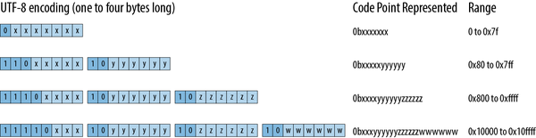
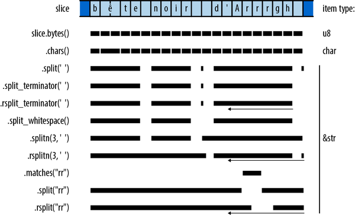

第 17 章 字符串和文本
字符串是一种简单的数据结构，在传输过程中存在大量的重复操作。它简直是隐藏信息的绝佳工具。
艾伦·珀利斯，警句#34
在整本书中，我们一直在使用 Rust 的主要文本类型： String 、 str 和 char 。在“字符串和字符类型”这一章节中，我们介绍了字符和字符串字面量的语法，并说明了字符串在内存中的存储方式。在本章中，我们将更详细地探讨文本处理的相关内容。
在本章中：
-
我们为您提供一些关于 Unicode 的背景信息，这有助于您更好地理解标准库的设计理念。
-
我们描述的是
char类型，它表示一个单独的 Unicode 代码点。 -
我们定义了
String和str这两种类型，分别用于表示已拥有的 Unicode 字符序列和借用的 Unicode 字符序列。这些类型提供了多种方法来构建、搜索、修改以及遍历其包含的内容。 -
我们介绍了 Rust 中用于字符串格式化的功能，比如
println!和format!宏。你可以编写自己的宏来处理字符串格式化，并扩展这些宏以支持自己的数据类型。 -
最后，我们简要介绍一下 Rust 语言对正则表达式的支持情况。
一些 Unicode 背景相关的内容
这本书讲的是 Rust 语言，而不是 Unicode。已经有很多书籍专门讨论 Unicode 了。不过，Rust 的字符和字符串类型确实是基于 Unicode 设计的。以下是一些有助于理解 Rust 的 Unicode 相关内容的例子。
ASCII、Latin-1 和 Unicode
Unicode 和 ASCII 在所有的字符编码点上都是匹配的，从 0 到 0x7f 。例如，两者都将 * 这个字符分配了 42 的编码点。同样地，Unicode 将 0 到 0xff 这几个编码点分配给与 ISO/IEC 8859-1 字符集相同的字符，而 ISO/IEC 8859-1 实际上是 ASCII 的 8 位超集，适用于西欧语言。Unicode 将这一编码点范围称为 Latin-1 代码块，因此我们会用更直观的称呼来指代 ISO/IEC 8859-1，即 Latin-1。
由于 Unicode 是 Latin-1 的超集，因此将 Latin-1 转换为 Unicode 甚至不需要使用任何转换表。
fnlatin1_to_char(latin1:u8)->char{latin1aschar}
反向转换也很简单，前提是代码点落在 Latin-1 范围内：
fnchar_to_latin1(c:char)->Option<u8>{ifcasu32<=0xff{Some(casu8)}else{None}}
UTF-8
Rust 中的 String 和 str 类型用于表示文本，采用 UTF-8 编码格式。UTF-8 将一个字符编码为 1 到 4 字节的序列（见图 17-1）。

图 17-1. UTF-8 编码
图 17-2 展示了一些示例。

图 17-2. UTF-8 编码的示例
请注意，虽然螃蟹表情符号的编码中，其首字节仅包含零位，但它仍然需要四字节的编码方式。因为三字节的 UTF-8 编码只能表示 16 位的数据点，而 0x1f980 这个符号需要 17 位来表示。
这里有一个包含不同编码字符的字符串的简短示例：
assert_eq!("うどん: udon".as_bytes(),&[0xe3,0x81,0x86,// う0xe3,0x81,0xa9,// ど0xe3,0x82,0x93,// ん0x3a,0x20,0x75,0x64,0x6f,0x6e,// : udon],);
图 17-2 还展示了 UTF-8 编码的一些非常有用的特性：
-
由于 UTF-8 编码将
0到0x7f之间的代码点仅仅当作0到0x7f之间的字节来处理，因此包含 ASCII 字符的字节序列也是有效的 UTF-8 编码。同样地，如果一段 UTF-8 编码的字符串只包含 ASCII 字符，那么同样的结论也适用于这种情况：该 UTF-8 编码也是有效的 ASCII 编码。对于 Latin-1 来说情况并非如此：例如，Latin-1 将
é编码为字节0xe9，而 UTF-8 则会将其解释为三字节编码的第一个字节。 -
通过查看任何字节的高位比特，就可以立即判断出该字节是某个字符的 UTF-8 编码的开始部分，还是其中的一个普通字节。
-
一个编码的第一个字节就足以通过其中的前几位信息来确定该编码的完整长度。
-
由于没有任何编码长度超过四个字节，因此 UTF-8 编码处理根本不需要无限循环，这在处理不可信的数据时非常方便。
-
在格式良好的 UTF-8 编码中，可以明确地判断出字符编码的起始和结束位置，即使是从字节序列中的任意位置开始也是如此。UTF-8 中，第一个字节之后的所有字节都是不同的，因此一种编码不可能以另一种编码为前缀开始。这一特性带来了许多有益的效果。例如，在 UTF-8 字符串中查找 ASCII 分隔符时，只需简单地扫描相应的字节即可。由于 ASCII 分隔符永远不会出现在多字节编码中，因此无需关注 UTF-8 的结构。同样，那些在另一种编码中搜索单字节字符串的算法，在处理 UTF-8 字符串时也能正常工作，尽管有些算法甚至不需要检查文本中的每个字节。
虽然可变宽度编码比固定宽度编码更复杂，但这些特性使得 UTF-8 这种编码方式比人们想象的更加易于使用。标准库能够处理大部分相关事务，从而让 UTF-8 编码变得更加方便。
文本方向性
像拉丁文、西里尔文和泰文这样的文字是从左向右书写的，而希伯来文和阿拉伯文这类文字则是从右向左书写的。Unicode 将字符按照通常的书写顺序进行存储，因此，如果一个字符串包含希伯来文文本，那么该字符串的起始几个字节就代表了应该书写在右侧的字符。
assert_eq!("ערב טוב".chars().next(),Some('ע'));
角色（char）
char 是一个 32 位的值，用于存储 Unicode 编码点。 char 的值必定位于 0 到 0xd7ff 的范围内，或者位于 0xe000 到 0x10ffff 的范围内；所有用于创建和操作用 char 值的函数都确保了这一点。 char 类型实现了 Copy 和 Clone 的功能，同时还具备了比较、哈希和格式化的所有常见功能。
通过 slice.chars() 符号，我们可以对一个字符串切片中的字符进行迭代处理。
assert_eq!("カニ".chars().next(),Some('カ'));
在接下来的描述中，变量 ch 的类型始终为 char 。
对角色进行分类
char 类型包含一些用于将字符分类的方法，这些分类依据了表 17-1 中列出的几种常见类别。所有这些分类方法都源自 Unicode 的标准定义。
| 方法 | 描述 | 例子 |
|---|---|---|
ch.is_numeric() |
一个数字字符。这包括了 Unicode 中的“数字；数字字符”和“数字；字母”这两个类别，但不包括“数字；其他”这一类别。 | '4'.is_numeric()'ᛮ'.is_numeric()'⑧'.is_numeric() |
ch.is_alphabetic() |
字母字符：Unicode 中“Alphabetic”属性所表示的字符类型。 | 'q'.is_alphabetic()'七'.is_alphabetic() |
ch.is_alphanumeric() |
无论是数字还是字母，都按照之前的定义进行识别。 | '9'.is_alphanumeric()'饂'.is_alphanumeric()!'*'.is_alphanumeric() |
ch.is_whitespace() |
一个空白字符：Unicode 字符属性“WSpace=Y”。 | ' '.is_whitespace()'\n'.is_whitespace()'\u{A0}'.is_whitespace() |
ch.is_control() |
一个控制字符：Unicode 中的“其他，控制”通用类别。 | '\n'.is_control()'\u{85}'.is_control() |
另一组方法仅适用于 ASCII 字符，对于非 ASCII 的 char ，会返回 false （参见表 17-2）。
| 方法 | 描述 | 例子 |
|---|---|---|
ch.is_ascii() |
一个 ASCII 字符：其代码点位于 0 和 127 之间，包括这两个代码点。 |
'n'.is_ascii()!'ñ'.is_ascii() |
ch.is_ascii_alphabetic() |
一个大写或小写的小写 ASCII 字母，其字符值位于 'A'..='Z' 到 'a'..='z' 的范围内。 |
'n'.is_ascii_alphabetic()!'1'.is_ascii_alphabetic()!'ñ'.is_ascii_alphabetic() |
ch.is_ascii_digit() |
一个 ASCII 数字，范围在 '0'..='9' 之间。 |
'8'.is_ascii_digit()!'-'.is_ascii_digit()!'⑧'.is_ascii_digit() |
ch.is_ascii_hexdigit() |
所有位于 '0'..='9' 、 'A'..='F' 或 'a'..='f' 范围内的字符。 |
|
ch.is_ascii_alphanumeric() |
一个 ASCII 数字，或者一个大写或小写的字母。 | 'q'.is_ascii_alphanumeric()'0'.is_ascii_alphanumeric() |
ch.is_ascii_control() |
一个 ASCII 控制字符，包括“DEL”字符。 | '\n'.is_ascii_control()'\x7f'.is_ascii_control() |
ch.is_ascii_graphic() |
任何会在页面上留下墨迹的 ASCII 字符：不包括空格或控制字符。 | 'Q'.is_ascii_graphic()'~'.is_ascii_graphic()!' '.is_ascii_graphic() |
ch.is_ascii_uppercase(),ch.is_ascii_lowercase() |
ASCII 编码中的大写字母和小写字母。 | 'z'.is_ascii_lowercase()'Z'.is_ascii_uppercase() |
ch.is_ascii_punctuation() |
任何既不是字母也不是数字的 ASCII 图形字符。 | |
ch.is_ascii_whitespace() |
一个 ASCII 空白字符：空格、水平制表符、换行符、换页符或回车符。 | ' '.is_ascii_whitespace()'\n'.is_ascii_whitespace()!'\u{A0}'.is_ascii_whitespace() |
所有 is_ascii_ ……方法也可以在 u8 字节类型上使用：
assert!(32u8.is_ascii_whitespace());assert!(b'9'.is_ascii_digit());
在使用这些功能时，需要注意它们如何适应现有的规范，比如编程语言标准或文件格式等规范。因为不同环境下的处理方式可能会有很大差异。例如， is_whitespace 和 is_ascii_whitespace 在处理某些字符时有着不同的方式。
letline_tab='\u{000b}';// 'line tab', AKA 'vertical tab'assert_eq!(line_tab.is_whitespace(),true);assert_eq!(line_tab.is_ascii_whitespace(),false);
char::is_ascii_whitespace 这个函数实现了许多网络标准中通用的空白字符定义，而 char::is_whitespace 则遵循 Unicode 标准。
处理数字
在处理数字时，可以使用以下方法：
ch.to_digit(radix)-
该函数用于判断ch是否是一个以radix为基数的数字。如果确实是数字，则返回Some(num)，其中num是一个u32。否则，则返回None。该函数仅能识别 ASCII 范围内的数字，无法处理char::is_numeric所涵盖的更广泛字符类型。radix参数的取值范围为 2 到 36。对于大于 10 的基数，无论大小写，ASCII 字母都被视为数字，其数值范围为 10 到 35。 char::from_digit(num, radix)-
一个免费的函数，可以将u32中的数字值num转换为char。如果num可以表示为radix中的单个数字，那么from_digit会返回Some(ch)，其中ch就是那个数字。当radix大于 10 时，ch可能是个小写字母。否则，它就会返回None。这是
to_digit的相反情况。如果char::from_digit(num, radix)等于Some(ch)，那么ch.to_digit(radix)就等于Some(num)。同样地，如果ch是一个 ASCII 数字或小写字母，那么相反的情况也成立。 ch.is_digit(radix)-
如果ch是一个以radix为底数表示的数字，那么就会返回true的值。这相当于ch.to_digit(radix) != None的值。
比如：
assert_eq!('F'.to_digit(16),Some(15));assert_eq!(char::from_digit(15,16),Some('f'));assert!(char::is_digit('f',16));
字符的大小写转换处理
对于处理字符大小写：
ch.is_lowercase(),ch.is_uppercase()-
请说明ch是一个小写字母还是大写字母。根据 Unicode 的规定，这些字符遵循了关于小写和大写字母的派生属性，因此它们可以处理如希腊语和西里尔字母等非拉丁字母表，同时也能为 ASCII 字符提供预期的结果。 ch.to_lowercase(),ch.to_uppercase()-
根据 Unicode 大小写转换算法，返回用于生成ch对应字符的小写和大写版本的迭代器：letmutupper='s'.to_uppercase();assert_eq!(upper.next(),Some('S'));assert_eq!(upper.next(),None);这些方法返回的是迭代器，而不是单个字符。因为在 Unicode 中，大小写转换并不总是具有一对一的对应关系：
// The uppercase form of the German letter "sharp S" is "SS":letmutupper='ß'.to_uppercase();assert_eq!(upper.next(),Some('S'));assert_eq!(upper.next(),Some('S'));assert_eq!(upper.next(),None);// Unicode says the lowercase of Turkish dotted capital 'İ' is// 'i' followed by `'\u{307}'`, COMBINING DOT ABOVE, so that a// subsequent conversion back to uppercase preserves the dot.letch='İ';// `'\u{130}'`letmutlower=ch.to_lowercase();assert_eq!(lower.next(),Some('i'));assert_eq!(lower.next(),Some('\u{307}'));assert_eq!(lower.next(),None);为了方便使用，这些迭代器实现了
std::fmt::Displaytrait，因此你可以将它们直接传递给println!或write!宏。
整数之间的转换
Rust 中的 as 运算符可以将 char 转换为任何整数类型，同时会默默地掩盖掉那些较高的位。
assert_eq!('B'asu32,66);assert_eq!('饂'asu8,66);// upper bits truncatedassert_eq!('二'asi8,-116);// same
as 运算符可以将任何 u8 类型的值转换为 char 类型。而 char 也支持将 From<u8> 类型的值转换为 char::from_u32 类型。不过，较宽泛的整数类型可能会表示出无效的代码点，因此对于这类情况，必须使用 char::from_u32 类型，它返回的是 Option<char> 类型的值。
assert_eq!(char::from(66),'B');assert_eq!(char::from_u32(0x9942),Some('饂'));assert_eq!(char::from_u32(0xd800),None);// reserved for UTF-16
字符串和字符串对象
Rust 中的 String 和 str 类型被保证只包含格式正确的 UTF-8 编码字符。该库通过限制创建 String 和 str 值的方式以及对其进行的操作，来确保这一点。这样一来，这些值在初次使用时就是格式正确的，并且在后续操作中也保持正确的格式。所有相关的方法都支持这一特性：对这些值的任何安全操作都不会导致格式错误的 UTF-8 编码字符的出现。这简化了与文本相关的代码编写工作。
Rust 会在 str 或 String 上放置文本处理函数，这取决于该方法是否需要可调整大小的缓冲区，或者仅仅是用于存储文本而已。由于 String 可以引用到 &str ，因此定义在 str 上的每个函数也都可以直接在 String 中使用。本节将介绍这两种类型的方法，并根据它们的用途进行大致分类。
String 被实现为一个包装器，用于包裹 Vec<u8> ，从而确保向量的内容始终为格式正确的 UTF-8 编码。Rust 永远不会将 String 转换为更复杂的表示形式，因此你可以认为 String 具有与 Vec 相同的性能特性。
在这些解释中，各个变量的类型如表 17-3 所标注的那样。
| 变量 | 假定类型 |
|---|---|
string |
String |
slice |
&str 或者类似的值，指的是那些可以解引用的地址，比如 String 或 Rc<String> |
ch |
char |
n |
usize ，一个长度 |
i, j |
usize ，一个字节偏移量 |
一系列字节偏移量，这些偏移量可以是完全有限的，如 i..j ，也可以是部分有限的，如 i.. 、 ..j 或 .. 。 |
|
这些是一种用于搜索字符串的模式。请参阅“用于文本搜索的模式”。 |
创建字符串值
创建 String 值有几种常见的方法：
String::new()-
返回一个新的、空的字符串。这个字符串没有使用堆分配的内存，但会根据需要动态分配内存。 String::with_capacity(n)-
该构造函数返回一个新的、空的字符串。在创建字符串之前，会预先分配一个缓冲区，该缓冲区的容量至少为n字节。如果你能够提前知道要创建的字符串的长度，那么可以使用这个构造函数来正确设置缓冲区的容量，而无需在创建字符串的过程中不断调整缓冲区的大小。如果字符串的长度超过n字节，缓冲区仍然会根据需要继续增长。与向量类似，字符串也拥有capacity、reserve和shrink_to_fit等方法，但通常使用默认的内存分配逻辑就足够了。 str_slice.to_string()和String::from(str_slice)-
该操作分配了一个新的变量String，其内容为变量str_slice的副本。在整本书中，我们一直使用类似"literal text".to_string()这样的表达式来将字符串字面量转换为变量String的形式；String::from("literal text")也执行了类似的操作。
format!()宏-
该函数会返回一个新的String对象，其内容由提供的格式字符串和参数构建而成，与println!类似。这种小型语言在“格式化值”这一章节中有更详细的描述。 iter.collect()-
通过连接迭代器的元素来构造一个字符串，这些元素可以是char、&str或String的值。例如，要删除字符串中的所有空格，可以这样写：letspacey="man hat tan";letspaceless:String=spacey.chars().filter(|c|!c.is_whitespace()).collect();assert_eq!(spaceless,"manhattan");
以这种方式使用collect，可以利用String对std::iter::FromIterator特性的实现。
简单检查
这些方法可以从字符串切片中获取基本信息：
slice.len()-
slice的长度，以字节为单位。 slice.is_empty()-
如果slice.len() == 0，那么为真。 slice[range]-
返回从slice开始，包含指定部分的切片。部分有边界且无边界的区间也是可以的；例如：letfull="bookkeeping";assert_eq!(&full[..4],"book");assert_eq!(&full[5..],"eeping");assert_eq!(&full[2..4],"ok");assert_eq!(full[..].len(),11);assert_eq!(full[5..].contains("boo"),false);请注意，无法仅通过单个位置来索引字符串切片，例如
slice[i]这样的用法。在指定的字节偏移位置获取单个字符的方式有些笨拙：必须先创建一个chars类型的迭代器来遍历切片，然后再让它解析一个字符的 UTF-8 编码。letparenthesized="Rust (饂)";assert_eq!(parenthesized[6..].chars().next(),Some('饂'));
不过，你几乎不需要经常进行这种操作。Rust 提供了更简洁的方法来处理切片操作，我们在《遍历文本》一文中对此进行了详细描述。 slice.split_at(i)-
返回两个共享切片的组合，这两个切片来自slice。第一个切片是直到字节偏移量i的部分，第二个切片则是其之后的部分。换句话说，这实际上就是返回(slice[..i], slice[i..])。 slice.is_char_boundary(i)-
如果字节偏移量i位于字符边界之间，那么它就适合作为slice中的偏移量。而零和slice.len()始终被视为字符边界。
当然，我们可以比较字符串的切片是否相等、排序结果如何以及哈希值是否相同。对于排序比较，只是将字符串视为一系列 Unicode 编码点，然后按照字典顺序进行比对。
添加和插入文本
以下这些方法可以用于向 String 添加文本：
string.push(ch)-
在string的末尾添加了字符ch。 string.push_str(slice)-
添加了slice中的全部内容。 string.extend(iter)-
将迭代器iter产生的元素添加到字符串中。该迭代器可以产生char、str或String这些值。这些是String对std::iter::Extend的实现：letmutalso_spaceless="con".to_string();also_spaceless.extend("tri but ion".split_whitespace());assert_eq!(also_spaceless,"contribution"); string.insert(i, ch)-
在string中的字节偏移量i位置插入了一个字符ch。这会导致i之后的所有字符移位，以给ch腾出空间。因此，通过这种方式构建字符串所需的时间与字符串的长度成正比。 string.insert_str(i, slice)-
这对slice来说也是一样的，不过同样存在性能方面的限制。
String 实现了 std::fmt::Write 的功能，这意味着 write! 和 writeln! 宏可以将格式化的文本附加到 String 中：
usestd::fmt::Write;letmutletter=String::new();writeln!(letter,"Whose {} these are I think I know","rutabagas")?;writeln!(letter,"His house is in the village though;")?;assert_eq!(letter,"Whose rutabagas these are I think I know\n\His house is in the village though;\n",);
由于 write! 和 writeln! 是用于向输出流写入数据的工具，因此它们会返回 Result 类型的数据。如果忽略这个返回值，Rust 会发出警告。不过，这段代码使用了 ? 运算符来处理这种情况。而向 String 类型的数据写入则绝对是安全的，因此在这种情况下，使用 .unwrap() 也是完全可行的。
由于 String 实现了 Add<&str> 和 AddAssign<&str> ，因此可以编写如下代码：
letleft="partners".to_string();letmutright="crime".to_string();assert_eq!(left+" in "+&right,"partners in crime");right+=" doesn't pay";assert_eq!(right,"crime doesn't pay");
当应用于字符串时， + 运算符会将左边的操作数按值传递，因此实际上可以再次使用 String 作为加法的结果。这样一来，如果左边的操作数所存储的缓冲区足够大，能够容纳计算结果，那么就不需要进行任何分配操作了。
不幸的是，存在一种不对称的情况： String + &str 是有效的，而 &str + String 则无效。
letnote="NOTE: "+string;// error: cannot add `String` to `&str`
最简单的解决办法就是使用 format! ：
letnote=format!("NOTE: {string}");
Rust 很容易实现 &str 对 String 的 Add<String> 操作。不过，这个操作需要将 String 中的现有文本移送到缓冲区的末尾，以在前面腾出空间。这个过程比较慢，就像是在 Vec 的前面插入元素一样。如果反复进行这种操作，最终就会形成 String ，每次只添加几个字符到前面，这其实是一种性能上的缺陷。
通过不断添加小段字符串来构建字符串从开头到结尾的过程是高效的。 String 的行为类似于向量，它会在末尾保留额外的空间，并在需要更多空间时增加缓冲区的容量。
移除和替换文本
String 有一些方法可以用来删除文本（这些方法不会占用字符串的存储空间；如果你需要释放内存，可以使用 shrink_to_fit ）。
string.clear()string.truncate(n)-
丢弃字节偏移量为n之后的所有字符，使得string的长度最多为n字节。如果string的长度小于n字节，那么这一操作将不会产生任何效果。 string.pop()-
从string中移除最后一个字符（如果有的话），并将其作为Option<char>返回。 string.remove(i)-
该操作会移除位于字节偏移量i处、地址为string的字符，然后返回该字符。同时，后续的所有字符会被向前面移动一定的位置。这个操作所需的时间与后续字符的数量成正比。 string.drain(range)-
该接口返回一个迭代器，用于遍历给定的字节索引范围。当迭代器被移除后，相关的字符会被删除。范围内的字符会被重新调整位置，朝向前端移动。letmutchoco="chocolate".to_string();assert_eq!(choco.drain(3..6).collect::<String>(),"col");assert_eq!(choco,"choate");如果你只是想要移除某个范围，可以直接停止迭代器的工作，而不需要从它中移除任何元素：
letmutwinston="Churchill".to_string();winston.drain(2..6);assert_eq!(winston,"Chill"); string.replace_range(range, replacement)-
将string中的给定范围替换为给定的替换字符串。这个替换字符串不必与原始范围长度相同，但是，除非被替换的范围到达string的末尾，否则需要移动所有位于该范围末尾之后的字节。letmutbeverage="a piña colada".to_string();beverage.replace_range(2..7,"kahlua");// 'ñ' is two bytes!assert_eq!(beverage,"a kahlua colada");
搜索和迭代的规范
Rust 的标准库函数中，用于文本搜索和遍历文本的函数有一些统一的命名规则，这些命名规则使得它们更容易被记住：
r-
大多数操作都是按照从开始到结尾的顺序来处理文本的。但是，那些名称以r开头的操作则是按照从结尾到开始的顺序来进行处理的。例如，rsplit就是split的从结尾到开始的版本。在某些情况下，改变处理顺序不仅会影响值的生成顺序，还会影响这些值本身。请参考图 17-3 中的示意图来了解这种情况的例子。 n-
那些名称以
n结尾的迭代器会限制自己只处理给定数量的匹配项。 _indices-
那些名称以
_indices结尾的迭代器，除了会返回常规的迭代值之外，还会给出这些迭代值在切片中出现的字节偏移量。
标准库并没有为每一种操作提供所有可能的组合。例如，许多操作并不需要 n 这种变体，因为通常可以直接提前结束迭代过程，而不需要这种变体。
文本搜索的模式
当标准库函数需要搜索、匹配、分割或处理文本时，它接受多种不同的方式来表示要查找的内容：
lethaystack="One fine day, in the middle of the night";assert_eq!(haystack.find(','),Some(12));assert_eq!(haystack.find("night"),Some(35));assert_eq!(haystack.find(char::is_whitespace),Some(3));
这些类型被称为“模式”，而大多数操作都支持对它们进行操作：
assert_eq!("## Elephants".trim_start_matches(|ch:char|ch=='#'||ch.is_whitespace()),"Elephants",);
标准库支持四种主要类型的模式：
-
char作为模式，可以匹配该字符。 -
以
String或&str或&&str作为模式，会匹配一个与该模式相等的小字符串。 -
作为一种模式，
FnMut(char) -> bool闭包只匹配一个字符，该字符满足闭包返回 true 的条件。 -
[char; N]或&[char]这样的模式会匹配列表中出现的所有单个字符：letcode="\tfunction noodle() { ";assert_eq!(code.trim_start_matches([' ','\t']),"function noodle() { ",);
在库的代码中，所谓“模式”指的是实现了 std::str::Pattern 特性的任何类型。 Pattern 的具体实现细节尚未稳定，因此在稳定的 Rust 版本中无法为自定义类型实现该特性。不过，未来允许使用正则表达式和其他复杂的模式是可行的。Rust 承诺，目前支持的模式类型在未来仍然可以继续使用。
搜索与替换
Rust 提供了一些方法，可以用来在切片中查找模式，并可能用新的文本替换这些模式。
slice.contains(pattern)-
如果slice包含与pattern匹配的内容，则返回 true。 slice.starts_with(pattern),slice.ends_with(pattern)-
如果slice的起始或结尾文本与pattern匹配，则返回 true：assert!("2017".starts_with(char::is_numeric)); slice.find(pattern),slice.rfind(pattern)-
如果
Some(i)slicei包含与findpatternrfind匹配的内容，那么返回。其中表示模式出现的字节偏移量。方法返回第一个匹配项，则返回最后一个匹配项。letquip="We also know there are known unknowns";assert_eq!(quip.find("know"),Some(8));assert_eq!(quip.rfind("know"),Some(31));assert_eq!(quip.find("ya know"),None);assert_eq!(quip.rfind(char::is_uppercase),Some(0)); slice.replace(pattern, replacement)-
返回一个新的String对象，该对象通过将pattern中的所有匹配项替换为replacement来生成：assert_eq!("The only thing we have to fear is fear itself".replace("fear","spin"),"The only thing we have to spin is spin itself",);assert_eq!("`Borrow` and `BorrowMut`".replace(|ch:char|!ch.is_alphanumeric(),""),"BorrowandBorrowMut",);由于替换操作是立即进行的，因此
.replace()在遇到重叠匹配项时的行为可能会令人惊讶。这里，有四个实例使用了模式"aba"，但是当第一个和第三个实例被替换后，第二个和第四个实例就不再匹配了。assert_eq!("cabababababbage".replace("aba","***"),"c***b***babbage",); slice.replacen(pattern, replacement, n)-
这个操作也是一样的，但最多只能替换前n个匹配项。
对文本进行遍历
标准库提供了多种方式来遍历切片中的文本。图 17-3 展示了一些示例。
你可以把 split 和 match 这两个家族视为相互补充的关系：分裂现象其实就是匹配关系之间的差距。

图 17-3. 遍历切片数据的一些方法
这些方法中的大多数都返回可逆转的迭代器（也就是说，它们实现了 DoubleEndedIterator 功能）。调用它们的 .rev() 适配器方法后，你会得到一个迭代器，该迭代器能够按相反的顺序输出相同的数据。
slice.chars()-
返回一个遍历slice中字符的迭代器。 slice.char_indices()-
返回一个迭代器，该迭代器可以遍历slice中字符及其对应的字节偏移量。assert_eq!("élan".char_indices().collect::<Vec<_>>(),vec![(0,'é'),// has a two-byte UTF-8 encoding(2,'l'),(3,'a'),(4,'n'),],);请注意，这并不等同于
.chars().enumerate()，因为后者只是给字符分配了一个编号，而这里则提供了每个字符在切片中的字节偏移量。 slice.bytes()-
返回一个遍历slice中每个字节的迭代器，从而揭示其 UTF-8 编码方式：assert_eq!("élan".bytes().collect::<Vec<_>>(),vec![195,169,b'l',b'a',b'n'],); slice.lines()-
该工具返回一个迭代器，用于遍历slice中的各行。各行由"\n"或"\r\n"标识结束。每个返回的值都是从slice中借用来的&str。需要注意的是，这些返回值并不包含行尾的字符。 slice.split(pattern)-
该函数返回一个迭代器，用于遍历在pattern中匹配到的slice中的各个部分。在紧密相邻的匹配项之间，以及slice的开头和结尾处的匹配项之间，会返回空字符串。如果
pattern是&str类型，那么返回的迭代器是不可逆的。这种模式会根据扫描的方向不同而产生不同的匹配结果，而这是不可允许的行为。相反，你可以尝试使用rsplit方法，具体方法将在下文中描述。 slice.rsplit(pattern)-
这种方法的原理相同，只是扫描是从slice的末尾开始，依次查找匹配项。 slice.split_terminator(pattern),slice.rsplit_terminator(pattern)-
这些其实都是类似的，不过这里的模式被当作一个终止符来处理，而不是一个分隔符。也就是说，如果pattern位于slice的末尾，那么迭代器就不会产生一个空切片，因为此时该位置实际上是一个空字符串，而split和rsplit则会产生这样的空切片。例如：// The ':' characters are separators here. Note the final "".assert_eq!("jimb:1000:Jim Blandy:".split(':').collect::<Vec<_>>(),vec!["jimb","1000","Jim Blandy",""],);// The '\n' characters are terminators here.assert_eq!("127.0.0.1 localhost\n\127.0.0.1 www.reddit.com\n".split_terminator('\n').collect::<Vec<_>>(),vec!["127.0.0.1 localhost","127.0.0.1 www.reddit.com",// Note, no final ""!],); slice.splitn(n, pattern),slice.rsplitn(n, pattern)-
这些类似于split和rsplit，不过它们的特点是会将字符串分割成最多n个片段，这些片段分别位于第一个或最后一个n-1匹配位置，对应的索引为pattern。 slice.split_whitespace(),slice.split_ascii_whitespace()-
返回一个迭代器，用于遍历slice中由空白字符分隔的部分。多个空白字符连续出现时，视为一个分隔符。末尾的空白字符会被忽略。
split_whitespace方法采用 Unicode 中对空白字符的定义来处理空白字符，这一实现是通过char中的is_whitespace方法来实现的。而split_ascii_whitespace方法则使用char::is_ascii_whitespace，后者仅识别 ASCII 空白字符。letpoem="\This is just to say\n\I have eaten\n\the plums\n\again\n";assert_eq!(poem.split_whitespace().collect::<Vec<_>>(),vec!["This","is","just","to","say","I","have","eaten","the","plums","again",],); slice.matches(pattern)-
返回在切片中查找pattern匹配项的迭代器。slice.rmatches(pattern)也是同样的用法，但是迭代的顺序是从末尾开始到开头。 slice.match_indices(pattern),slice.rmatch_indices(pattern)-
这些类似，不过它们产生的对象是(offset, match)对，其中offset表示匹配开始的字节偏移量，而match则表示匹配的片段。
修剪/整理
对字符串进行裁剪意味着从字符串的开头或结尾移除一些文本，通常是指空白字符。这种操作在清理从文件中读取的输入数据时非常有用，因为有时候用户可能会为便于阅读而缩进文本，或者有时候会在行尾留下多余的空白字符。
slice.trim()-
返回slice中去掉开头和结尾空白字符的子字符串。slice.trim_start()只去掉开头的空白字符，slice.trim_end()则只去掉结尾的空白字符。assert_eq!("\t*.rs ".trim(),"*.rs");assert_eq!("\t*.rs ".trim_start(),"*.rs ");assert_eq!("\t*.rs ".trim_end(),"\t*.rs"); slice.trim_matches(pattern)-
返回slice的子片段，其中不包含pattern在开头和结尾位置的匹配项。trim_start_matches和trim_end_matches方法分别只处理开头或结尾位置的匹配项。assert_eq!("001990".trim_start_matches('0'),"1990"); slice.strip_prefix(pattern),slice.strip_suffix(pattern)-
如果slice以pattern开头，那么strip_prefix会返回包含已移除匹配文本的部分内容。否则，它會返回None。strip_suffix方法的逻辑类似，但它会在字符串的末尾进行匹配检查。这些类似于
trim_start_matches和trim_end_matches，不过它们返回的是Option，而且只移除了一个pattern的副本：letslice="banana";assert_eq!(slice.strip_suffix("na"),Some("bana"));
字符串的字母转换
方法 slice.to_uppercase() 和 slice.to_lowercase() 返回了一个新分配的 String ，该 String 保存了 slice 中的文本，并将文本转换为大写或小写形式。结果的长度可能与 slice 的长度不同；详情请参阅“字符大小写转换”部分。
从字符串中解析其他类型的数据
Rust 提供了标准的功能，用于从字符串中解析值，以及生成值的文本表示形式。
如果一个类型实现了 std::str::FromStr trait，那么它就提供了一种标准的方法来解析来自字符串切片的值。
pubtraitFromStr:Sized{typeErr;fnfrom_str(s:&str)->Result<Self,Self::Err>;}
所有常见的机器类型都实现了 FromStr 功能：
usestd::str::FromStr;assert_eq!(usize::from_str("3628800"),Ok(3628800));assert_eq!(f64::from_str("128.5625"),Ok(128.5625));assert_eq!(bool::from_str("true"),Ok(true));assert!(f64::from_str("not a float at all").is_err());assert!(bool::from_str("TRUE").is_err());
char 类型也实现了 FromStr 的功能，适用于仅包含一个字符的字符串：
assert_eq!(char::from_str("é"),Ok('é'));assert!(char::from_str("abcdefg").is_err());
std::net::IpAddr 类型是一种 enum ，它持有一个 IPv4 或 IPv6 的互联网地址。同时， std::net::IpAddr 类型也实现了 FromStr 的功能：
usestd::net::IpAddr;letaddress=IpAddr::from_str("fe80::0000:3ea9:f4ff:fe34:7a50")?;assert_eq!(address,IpAddr::from([0xfe80,0,0,0,0x3ea9,0xf4ff,0xfe34,0x7a50]),);
字符串切片有一个 parse 方法，可以将切片解析成你喜欢的任何类型，前提是该类型实现了 FromStr 接口。与 Iterator::collect 类似，有时你需要明确说明想要的类型，因此 parse 的语法并不总是比直接调用 from_str 更易于理解：
letaddress="fe80::0000:3ea9:f4ff:fe34:7a50".parse::<IpAddr>()?;
将其他类型的数据转换为字符串
将非文本值转换为字符串主要有三种方法：
-
那些具有天然可读打印格式的数据类型可以实现std::fmt::Display特性，这样你就可以在format!宏中使用{}格式说明符：assert_eq!(format!("{}",1+1==2),"true");assert_eq!(format!("({:.3}, {:.3})",0.5,3f64.sqrt()/2.0),"(0.500, 0.866)",);// Using `address` from above.letformatted_addr:String=format!("{address}");assert_eq!(formatted_addr,"fe80::3ea9:f4ff:fe34:7a50");
在 Rust 中，所有的机器数值类型都实现了Display接口，字符、字符串和切片也是如此。智能指针类型Box<T>、Rc<T>和Arc<T>如果其引用对象实现了Display接口，那么这些类型也将会实现该接口。而像Vec和HashMap这样的容器类型则不会实现Display接口，因为这些类型并没有一种自然且易于理解的形式来表示。 -
如果某个类型实现了
Display，那么标准库会自动为其实现std::str::ToString特征。其中的唯一方法to_string在不需要format!的灵活性时会更加实用：// Continued from above.assert_eq!(address.to_string(),"fe80::3ea9:f4ff:fe34:7a50");
ToString这种特性在Display被引入之前就已经存在了，不过它的灵活性相对较差。对于你自己定义的类型，通常应该采用Display而不是ToString来进行实现。 -
标准库中的每种公共类型都实现了std::fmt::Debug功能，它接受一个值，并以对程序员有帮助的方式将其格式化为字符串。使用Debug生成字符串最简单的方法是通过format!宏的{:?}格式说明符：// Continued from above.letaddresses=vec![address,IpAddr::from_str("192.168.0.1")?];assert_eq!(format!("{addresses:?}"),"[fe80::3ea9:f4ff:fe34:7a50, 192.168.0.1]",);
这种方法利用了对Debug的通用实现，使得Vec<T>可以调用Debug的功能。而任何实现了Debug的 T 对象，也能调用 Debug 的功能。Rust 中的所有集合类型都具备这样的实现。
你也应该为自己的类型实现Debug。通常，让 Rust 自动生成实现是最理想的做法，就像我们在第 12 章中对Complex类型的处理那样。#[derive(Copy, Clone, Debug)]structComplex{re:f64,im:f64,}
Display 和 Debug 是 format! 宏及其相关函数用来将值格式化为文本的两种方式而已。其他的方式我们将在“格式化值”这一章节中进行介绍，并且会说明如何实现所有这些方式。
将其他类似文本类型的元素作为正文进行引用
你可以以几种不同的方式借用“slice”中的内容：
-
切片和String实现了AsRef<str>、AsRef<[u8]>、AsRef<Path>以及AsRef<OsStr>这些功能。许多标准库函数都会将这些特性作为参数的类型限制条件，因此你可以直接将这些切片和字符串类型作为参数传递，即使它们实际上想要的是其他类型的参数。更多详细内容请参考“AsRef 和 AsMut”部分。 -
切片和字符串也实现了std::borrow::Borrow<str>特性。HashMap和BTreeMap使用Borrow来使String作为表中的键时能够正常工作。详情请参考“Borrow and BorrowMut”部分。
以 UTF-8 格式访问文本数据
获取表示文本的字节有两种主要方式，这取决于你是希望拥有这些字节，还是只是借用它们而已：
slice.as_bytes()-
以
&[u8]的形式借用slice的字节。由于这不是一个可变的引用，因此slice可以假设其字节仍然会是格式正确的 UTF-8 编码。 string.into_bytes()-
该函数负责处理
string这个对象，并以值的形式返回该字符串的Vec<u8>个字节。这实际上是一种简单的转换操作，因为只是将字符串所使用的缓冲区Vec<u8>中的字节数据传递给了该函数。由于string已经不存在了，因此这些字节不需要再保持为格式良好的 UTF-8 格式，调用者可以随意修改Vec<u8>中的字节数据。
从 UTF-8 编码的数据生成文本
如果你有一组字节数据，认为其中包含了 UTF-8 编码的字符，那么你可以根据自己对错误的处理方式，采取以下几种方法来将这些字节数据转换为 String 符号或片段：
str::from_utf8(byte_slice)-
提取&[u8]个字节，然后返回Result个字节：如果byte_slice包含格式正确的 UTF-8 编码数据，则返回Ok(&str)个字节；否则则返回错误信息。 String::from_utf8(vec)-
尝试通过值传递的方式，从Vec<u8>构建出一个字符串。如果vec包含的是格式正确的 UTF-8 编码文本，那么from_utf8会将Ok(string)返回给string。此时string会取得 vec 的控制权，以便将其作为缓冲区使用。在这个过程中，不会进行任何堆内存分配或文本复制操作。如果这些字节不是有效的 UTF-8 编码，那么会返回
Err(e)。其中e表示FromUtf8Error格式的错误值。调用e.into_bytes()后，原始向量vec会被恢复，因此当转换失败时，数据并不会丢失。letgood_utf8:Vec<u8>=vec![0xe9,0x8c,0x86];assert_eq!(String::from_utf8(good_utf8).ok(),Some("錆".to_string()));letbad_utf8:Vec<u8>=vec![0x9f,0xf0,0xa6,0x80];letresult=String::from_utf8(bad_utf8);assert!(result.is_err());// Since String::from_utf8 failed, it didn't consume the original// vector, and the error value hands it back to us unharmed.assert_eq!(result.unwrap_err().into_bytes(),vec![0x9f,0xf0,0xa6,0x80],); String::from_utf8_lossy(byte_slice)-
尝试从共享的字节切片中构造出一个String或&str。这种转换总是能够成功完成，会将所有格式不正确的 UTF-8 编码数据替换为 Unicode 替换字符。返回值是一个Cow<str>，如果其中包含的是格式正确的 UTF-8 数据，那么这个Cow<str>会直接借用来自byte_slice的&str；如果包含的是格式不正确的数据，那么就会创建一个新的String，并将替换字符替换这些不正确的字节。因此，当byte_slice是格式正确的数据时，就不会发生任何内存分配或复制操作。关于Cow<str>的详细信息，请参考“减少分配需求”一文。 String::from_utf8_unchecked(vec)-
如果你确信你的Vec<u8>包含格式正确的 UTF-8 字符，那么你可以调用这个不安全的函数。该函数只是将vec包装成String的形式并返回它，而完全不检查其中的字节数据。
在 Rust 中，所有的字符串方法都假设其操作的对象是格式正确的 UTF-8 编码字符串。如果你传递了格式不正确的 UTF-8 编码字符串给这些函数，可能会导致无效的结果，或者甚至引发程序崩溃。Rust 并不提供任何保证。因此，标准库将这种情况定义为一个错误。你只能在这些函数内部使用这种方法。如果你使用了这种方法，那么确保传递的是格式正确的 UTF-8 编码字符串就取决于你了。 str::from_utf8_unchecked(byte_slice)-
同样地，这个操作会接收一个&[u8]作为参数，然后将其作为&str返回。而无需检查该参数是否包含格式正确的 UTF-8 编码数据。与String::from_utf8_unchecked的情况类似，你需要确保这一操作是安全的。
推迟分配工作
假设你想让程序向用户问好。在 Unix 系统中，你可以这样编写：
fnget_name()->String{std::env::var("USER")// Windows uses "USERNAME".unwrap_or("whoever you are".to_string())}println!("Greetings, {}!",get_name());
std::env::var 函数返回的是 String 类型的数据——这样做是有合理的原因的，不过我们就不详细讨论了。但这意味着替代的库存文本也必须以 String 类型返回。这确实令人失望：当 get_name 返回的是静态字符串时，其实根本不需要进行任何分配操作。
问题的核心在于：有时候， get_name 的返回值应该是某个已拥有的 String ，有时候又应该是 &'static str 。在程序运行之前，我们无法确定具体会是哪一个。这种动态特性提示我们应考虑使用 std::borrow::Cow ，这种可复制数据的类型可以存储既有的数据，也可以存储借用来的数据。
如“Borrow and ToOwned at Work: The Humble Cow”一文所解释的， Cow<'a, T> 是一个枚举类型，包含两种变体： Owned 和 Borrowed 。 Borrowed 持有一个对 &'a T 的引用，而 Owned 则持有 &T 的拥有版本： String ，分别属于 &str 、 &[i32] 等。无论是 Owned 还是 Borrowed ， Cow<'a, T> 总能产生一个可供使用的 &T 。实际上， Cow<'a, T> 会指向前一个 &T ，从而起到一种智能指针的作用。
将 get_name 改为返回 Cow 后，结果如下：
usestd::borrow::Cow;fnget_name()->Cow<'static,str>{matchstd::env::var("USER").ok(){Some(v)=>Cow::Owned(v),None=>Cow::Borrowed("whoever you are"),}}
如果成功读取了 "USER" 环境变量，那么 match 中的 Some(v) 部分会将结果作为 String 返回，格式为 Cow::Owned 。如果失败， None 部分则会以静态 &str 的形式返回结果，格式为 Cow::Borrowed 。调用方无需进行任何修改即可继续使用。
println!("Greetings, {}!",get_name());
只要 T 实现了 std::fmt::Display 特性，那么显示 Cow<'a, T> 会得到与显示 T 相同的结果。
Cow 在需要或不需要修改所借用文本的情况下也非常有用。当不需要进行任何修改时，可以继续借用该文本。不过， Cow 的“克隆赋值”特性可以让您按需获得该值的可修改版本。 Cow 的 to_mut 方法确保 Cow 是 Cow::Owned 的实例，必要时还会应用值的 ToOwned 实现，然后返回对该值的可修改引用。
所以，如果你发现有些用户（并非所有用户）希望被用特定的称呼来称呼，那么你可以这样表达：
fnget_title()->Option<&'staticstr>{...}letmutname=get_name();ifletSome(title)=get_title(){name.to_mut().push_str(", ");name.to_mut().push_str(title);}println!("Greetings, {name}!");
这可能会产生如下这样的输出：
$cargorunGreetings, jimb, Esq.!$
这里的一个优点是，如果 get_name() 返回一个静态字符串，而 get_title 返回 None ，那么 Cow 就会一直持有这个静态字符串，直到 println! 。这样，你就可以在不需要立即分配资源的情况下，编写出简洁明了的代码。
由于 Cow 经常用于字符串操作，标准库提供了一些特殊的支持来处理 Cow<'a, str> 。它支持从 String 和 &str 进行 From 和 Into 类型的转换，因此你可以更简洁地编写像 get_name 这样的表达式。
fnget_name()->Cow<'static,str>{std::env::var("USER").map(|v|v.into()).unwrap_or("whoever you are".into())}
Cow<'a, str> 也实现了 std::ops::Add 和 std::ops::AddAssign 的功能。因此，如果你想在名称中添加标题，可以这样写：
ifletSome(title)=get_title(){name+=", ";name+=title;}
或者，因为 String 可以作为 write! 宏的目标：
usestd::fmt::Write;ifletSome(title)=get_title(){write!(name.to_mut(),", {title}").unwrap();}
请记住，并非所有的 Cow<..., str> 都需要直接呈现；你可以使用 Cow 来借用之前计算好的文本，直到需要复制一份为止。
字符串作为通用集合
String 同时实现了 std::default::Default 和 std::iter::Extend 的功能： default 返回空字符串，而 extend 则可以向字符串末尾添加字符、字符串切片、变量或字符串。这种特性组合与 Rust 其他集合类型如 Vec 和 HashMap 所实现的机制类似，适用于诸如 collect 和 partition 这样的通用构建模式。
&str 类型也实现了 Default 的功能，因此会返回一个空切片。在某些特殊情况下，这一点非常有用；例如，它可以帮助你推导出包含字符串切片的结构的 Default 值。
格式化数值
在整本书中，我们一直都在使用诸如 println! :这样的文本格式宏。
println!("{:.3}µs: relocated {} at {:#x} to {:#x}, {} bytes",0.84391,"object",140737488346304_usize,6299664_usize,64,);
这个调用会产生以下输出：
0.844µs: relocated object at 0x7fffffffdcc0 to 0x602010, 64 bytes
该格式字符串实际上是一个输出模板。模板中的每个 {...} 都会根据以下参数的格式进行替换。该格式字符串必须是一个常量，这样 Rust 可以在编译时将其与参数的类型进行匹配。每个参数都必须被使用；否则 Rust 会报告编译时的错误。
许多标准库功能都采用了这种用于字符串格式化的小语种：
-
format!宏使用它来构建String对象。 -
println!和print!宏会将格式化后的文本输出到标准输出流中。 -
writeln!和write!宏将其写入指定的输出流中。 -
panic!宏利用它来构建一种表达终端绝望情绪的语句（理想情况下应该具有信息性）。
Rust 的格式控制功能设计得非常灵活。你可以通过实现 std::fmt 模块的格式控制特性，来扩展这些宏，从而支持自己定义的类型。此外，你还可以使用 format_args! 宏和 std::fmt::Arguments 类型，让自己的函数和宏也能支持这种格式语言。
该模板的 {...} 形式的参数被称为格式参数，其形式为 {which:how} 。这两个部分都是可选的；其中 {} 是最常用的参数形式。
which 这个值决定了应该用什么来替代参数的位置。你可以从环境中选择特定的标识符，或者按照索引或名称的方式选择模板后面的参数。那些没有 which 值的参数则会被自动与从左到右的变量配对。
how 这个值决定了参数的格式：需要多少填充字符、使用何种精度、采用哪种数值进制等。如果使用了 how ，那么在其前面必须加上冒号。表 17-4 给出了一些示例。
| 格式字符串 | 论点列表 | 结果 |
|---|---|---|
"number of {}: {}" |
"elephants", 19 |
"number of elephants: 19" |
"from {1} to {0}" |
"the grave", "the cradle" |
"from the cradle to the grave" |
"v = {:?}" |
vec![0,1,2,5,12,29] |
"v = [0, 1, 2, 5, 12, 29]" |
"name = {:?}" |
"Nemo" |
"name = \"Nemo\"" |
"{:8.2} km/s" |
11.186 |
" 11.19 km/s" |
"{:11} {:02x} {:02x}" |
"adc #42", 105, 42 |
"adc #42 69 2a" |
"{1:02x} {2:02x} {0}" |
"adc #42", 105, 42 |
"69 2a adc #42" |
"{lsb:02x} {msb:02x} {insn}" |
insn="adc #42", lsb=105, msb=42 |
"69 2a adc #42" |
"{:02?}" |
[110, 11, 9] |
"[110, 11, 09]" |
"{:02x?}" |
[110, 11, 9] |
"[6e, 0b, 09]" |
如果您希望在输出中包含 { 或 } 字符，请在该模板中重复这些字符的数量：
assert_eq!(format!("{{a, c}} ⊂ {{a, b, c}}"),"{a, c} ⊂ {a, b, c}",);
对文本值进行格式化处理
当格式化像 &str 或 String 这样的文本类型时（ char 被视为单个字符字符串），参数 how 的值包含多个部分，这些部分都是可选的：
-
文本长度有限制。如果文本长度超过这个限制，Rust 会截断该文本。如果未指定长度限制，Rust 则会使用完整的文本。 -
至少需要一个固定的字段宽度。在进行任何截断操作之后，如果参数的长度小于这个宽度，Rust 会默认在参数的右侧添加空格，以形成一个这样的宽度。如果省略了这个选项，Rust 就不会为参数添加空格。 -
对齐方式。如果您的文本长度需要达到规定的字段宽度要求，那么就会指定文本应该在字段的哪个位置放置。<、^和>分别表示文本应放置在字段的起始处、中间和末尾。 -
在这个填充过程中使用的填充字符。如果省略这个字符，Rust 会使用空格。如果指定了填充字符，那么也必须指定对齐方式。
表 17-5 列举了几个示例，展示了如何编写某些内容以及它们产生的影响。所有这些示例都使用了相同的八字符参数 "bookends" 。
| 正在使用的功能 | 格式字符串 | 结果 |
|---|---|---|
| 默认设置 | "{}" |
"bookends" |
| 最小字段宽度 | "{:4}" |
"bookends" |
"{:12}" |
"bookends " |
|
| 文本长度限制 | "{:.4}" |
"book" |
"{:.12}" |
"bookends" |
|
| 字段宽度、长度限制 | "{:12.20}" |
"bookends " |
"{:4.20}" |
"bookends" |
|
"{:4.6}" |
"booken" |
|
"{:6.4}" |
"book " |
|
| 左对齐，宽度不变 | "{:<12}" |
"bookends " |
| 居中，宽度不变 | "{:^12}" |
" bookends " |
| 摆成直角，宽度为…… | "{:>12}" |
" bookends" |
放置于 '=' 处，居中，宽度为…… |
"{:=^12}" |
"==bookends==" |
Pad '*' ，居右对齐，有宽度，有限制 |
"{:*>12.4}" |
"********book" |
Rust 中的格式化工具对字符宽度有着简单的理解：它认为每个字符占据一个列位，而完全不考虑组合字符、半角字符、零宽度空格，以及 Unicode 系统中其他复杂的情况。例如：
assert_eq!(format!("{:4}","th\u{e9}"),"th\u{e9}");assert_eq!(format!("{:4}","the\u{301}"),"the\u{301}");
虽然 Unicode 声称这些字符串都等同于 "thé" ，但 Rust 的格式工具并不了解像 '\u{301}' 、COMBINING ACUTE ACENT 这样的字符需要特殊的处理方式。因此，它正确地处理了第一个字符串，但认为第二个字符串是四列宽，因此没有进行填充。虽然很容易看出 Rust 在这方面可以改进，但实际上要处理所有 Unicode 脚本的多语言文本格式是一个巨大的任务，最好依靠平台提供的用户界面工具集来处理这个问题，或者生成 HTML 和 CSS，然后通过网络浏览器来整理这些文本。有一个流行的包 unicode-width 可以处理这方面的问题。
由于文件名路径不一定符合正确的 UTF-8 编码格式，因此 std::path::Path 并不属于真正的文本类型；你不能直接将 std::path::Path 传递给格式化的宏。不过， Path 的 display 方法可以返回一个可以进行格式化的值，这样就能以平台兼容的方式对数据进行排序了。
println!("processing file: {}",path.display());
对数字进行格式设置
当格式参数包含数字类型时，比如 usize 或 f64 ，参数的 how 值由以下部分组成，这些部分都是可选的：
-
一种填充和对齐的方式，其运作原理与处理文本类型时的方法相同。 -
一个
+字符，要求无论参数的正负与否，该数的符号始终能够被显示出来。 -
一个
#字符，需要明确指定基数前缀，例如0x或0b。有关详细信息，请参考列表末尾的“符号表示”部分。 -
一个
0字符，要求通过在前面添加零来满足最小字段宽度要求，而不是使用常见的填充方法。 -
至少需要一个固定的字段宽度。如果格式化后的数字宽度不足，Rust 系统会在左侧添加空格来填充剩余的部分，从而使其达到所需的宽度。 -
对于浮点数的参数，需要指定 Rust 应该保留的小数位数。Rust 会根据需要进行四舍五入或扩展到适当的长度，以得到所需的小数位数。如果省略了这个参数，Rust 会尝试用尽可能少的位数来精确表示数值。对于整数类型的参数，则忽略这个参数。 -
一种表示方式。对于整数类型，可以使用b表示二进制数，o表示八进制数，而x或X则用于表示带有小写或大写字母的十六进制数。如果包含了#字符，则还会加上明确的 Rust 风格的数字进制前缀，如0b、0o、0x或0X。对于浮点类型，使用e或E来表示数字进制，此时需要采用科学计数法，并通过e或E来表示指数。如果未指定任何表示方式，Rust 会采用十进制格式来表示数字。
表 17-6 展示了一些对 i32 值进行格式化的示例。 1234 就是其中的一个例子。
| 正在使用的功能 | 格式字符串 | 结果 |
|---|---|---|
| 默认设置 | "{}" |
"1234" |
| 被迫签署 | "{:+}" |
"+1234" |
| 最小字段宽度 | "{:12}" |
" 1234" |
"{:2}" |
"1234" |
|
| 签名，宽度 | "{:+12}" |
" +1234" |
| 前导零位，宽度可调 | "{:012}" |
"000000001234" |
| 符号、零值、宽度 | "{:+012}" |
"+00000001234" |
| 左对齐，宽度不变 | "{:<12}" |
"1234 " |
| 居中，宽度不变 | "{:^12}" |
" 1234 " |
| 摆成直角，宽度为…… | "{:>12}" |
" 1234" |
| 左侧对齐，符号，宽度 | "{:<+12}" |
"+1234 " |
| 居中显示，标志，宽度： | "{:^+12}" |
" +1234 " |
| 摆成直角，标志，宽度合适 | "{:>+12}" |
" +1234" |
加上了 '=' 的填充效果，居中显示，宽度为…… |
"{:=^12}" |
"====1234====" |
| 二进制表示法 | "{:b}" |
"10011010010" |
| 宽度，八进制表示法 | "{:12o}" |
" 2322" |
| 符号、宽度、十六进制表示法 | "{:+12x}" |
" +4d2" |
| 符号、宽度、十六进制数，且数字需要使用大写字母表示。 | "{:+12X}" |
" ; +4D2" |
| 签名、明确的基数前缀、宽度、十六进制格式 | "{:+#12x}" |
" +0x4d2" |
| 符号、基数、零位、宽度、十六进制 | "{:+#012x}" |
"+0x0000004d2" |
"{:+#06x}" |
"+0x4d2" |
正如前两个例子所示，最小字段宽度适用于整个数字、符号、基数前缀等所有元素。
负数总是包含其符号。结果就像“强制符号”示例中所展示的那样。
利用参数 1234.5678 ，我们可以展示出与浮点类型相关的效果（参见表 17-7）。
| 正在使用的功能 | 格式字符串 | 结果 |
|---|---|---|
| 默认设置 | "{}" |
"1234.5678" |
| 精确性 | "{:.2}" |
"1234.57" |
"{:.6}" |
"1234.567800" |
|
| 最小字段宽度 | "{:12}" |
" 1234.5678" |
| 最小值，精度要求 | "{:12.2}" |
" 1234.57" |
"{:12.6}" |
" 1234.567800" |
|
| 前导零、最小值、精度 | "{:012.6}" |
"01234.567800" |
| 科学 | "{:e}" |
"1.2345678e3" |
| 科学性的、精确的 | "{:.3e}" |
"1.235e3" |
| 科学领域，最低要求，精确性 | "{:12.3e}" |
" 1.235e3" |
"{:12.3E}" |
" 1.235E3" |
格式化其他类型的数据
除了字符串和数字之外，你还可以格式化其他几种标准库类型的数据：
-
所有的错误类型都可以直接进行格式化，因此很容易将它们包含在错误信息中。每一种错误类型都应该实现std::error::Error这个特质，这个特质扩展了默认的格式化特质std::fmt::Display。因此，任何实现了Error的类型都可以进行格式化。 -
你可以对像std::net::IpAddr和std::net::SocketAddr这样的网络地址类型进行格式化处理。 -
布尔值true和false是可以进行格式化的，不过这些字符串通常并不适合直接提供给最终用户。
你应该使用与处理字符串时相同的格式参数。长度限制、字段宽度以及对齐方式的控制都按照预期正常工作。
为调试目的对数值进行格式化处理
为了辅助调试和日志记录， {:?} 参数能够以一种对程序员非常有帮助的方式，对 Rust 标准库中的各种公开类型进行格式化处理。你可以利用这一功能来查看向量、切片、元组、哈希表、线程以及其他数百种类型。
例如，你可以这样写：
usestd::collections::HashMap;letmutmap=HashMap::new();map.insert("Portland",(45.5237606,-122.6819273));map.insert("Taipei",(25.0375167,121.5637));println!("{map:?}");
这将会打印出：
{"Taipei": (25.0375167, 121.5637), "Portland": (45.5237606, -122.6819273)}
HashMap 和 (f64, f64) 类型已经知道如何自我格式化了，你无需再为此做任何努力。
如果将在格式参数中包含 # 字符，那么 Rust 会将其原样打印出来。如果將此代码中的 # 改为 println!("{map:#?}") ，那么输出将会变为这样： println!("{map:#?}")
{"Taipei": (25.0375167,121.5637,),"Portland": (45.5237606,-122.6819273,),}
这些确切的形式并不具有确定性，有时会在每次 Rust 版本的发布中发生变化。
在调试格式时，通常会在数字前加上小数点来表示十六进制数。不过，你也可以在问号前加上 x 或 X 来指定十六进制格式。此外，格式中的前导零和字段宽度限制也是被支持的。例如，你可以这样写：
println!("ordinary: {:02?}",[9,15,240]);println!("hex: {:02x?}",[9,15,240]);
这将会打印出：
ordinary: [09, 15, 240]hex: [09, 0f, f0]
正如我们之前提到的，你可以使用 #[derive(Debug)] 语法来让自定义类型与 {:?} 协同工作。
#[derive(Copy, Clone, Debug)]structComplex{re:f64,im:f64,}
有了这个定义之后，我们就可以使用 {:?} 格式来输出 Complex 的值了：
letthird=Complex{re:-0.5,im:3f64.sqrt()/2.0};println!("{third:?}");
这将会打印出：
Complex { re: -0.5, im: 0.8660254037844386 }
这对于调试来说已经足够了，不过如果 {} 能够以更传统的方式打印出这些结果就好了，比如使用 -0.5 + 0.8660254037844386i 。在“自定义类型格式化”这一章节中，我们将详细介绍如何做到这一点。
为调试目的对指针进行格式化处理
{:p} 这种标记方式将引用、框以及其他类似指针的数据类型格式化为地址形式。
usestd::rc::Rc;letoriginal=Rc::new("mazurka".to_string());letcloned=original.clone();letimpostor=Rc::new("mazurka".to_string());println!("text: {original}, {cloned}, {impostor}");println!("pointers: {original:p}, {cloned:p}, {impostor:p}");
这段代码会输出：
text: mazurka, mazurka, mazurkapointers: 0x7f99af80e000, 0x7f99af80e000, 0x7f99af80e030
地址通常看起来就像一堆混乱的十六进制代码，因此采用更精细的可视化方式或许会有好处。不过，那种简单的 {:p} 风格仍然是一种有效的快速解决方案。
指的是通过索引或名称进行查找的论点
格式参数可以明确指定所使用的参数。例如：
assert_eq!(format!("{1},{0},{2}","zeroth","first","second"),"first,zeroth,second",);
你可以在冒号之后添加格式参数：
assert_eq!(format!("{2:#06x},{1:b},{0:=>10}","first",10,100),"0x0064,1010,=====first",);
您也可以按照名称来选择参数：
assert_eq!(format!("{description:.<25}{quantity:2} @ {price:5.2}",price=4.25,quantity=3,description="Maple Turmeric Latte",),"Maple Turmeric Latte..... 3 @ 4.25",);
不过，那种使用命名参数的语法并不常用，因为格式字符串同样可以轻松地引用当前作用域中的变量。
let(quantity,description,price)=(2,"Amaretto Chai Breve",4.75);assert_eq!(format!("{description:.<25}{quantity:2} @ {price:5.2}"),"Amaretto Chai Breve...... 2 @ 4.75",);
你可以在一个格式化的宏中使用索引参数、命名参数以及位置参数（即没有索引或名称的参数）。这些位置参数按照从左到右的顺序与参数组合在一起，就好像没有索引参数和命名参数一样。
assert_eq!(format!("{mode} {2} {} {}","people","eater","purple",mode="flying",),"flying purple people eater",);
命名参数必须位于列表的末尾。
动态宽度与精度
参数的最小字段宽度、文本长度限制以及数值精度并非必须固定不变；你可以在运行时自行选择这些参数的值。
我们一直在研究类似的情况。例如，有一种表达方式可以让你在 20 个字符宽的字段中显示字符串 content ，并且该字符串会右对齐。
format!("{content:>20}")
但如果你希望在运行时选择字段宽度，可以这样编写：
format!("{content:>0$}",get_width())
在编写代码时，使用“ 0$ ”来表示最小字段宽度，这意味着系统会将第一个参数的值作为字段的宽度值。这个参数必须是一个 usize 类型的值。你也可以直接指定参数的名称：
format!("{content:>width$}",width=get_width())
同样的方法也适用于文本长度的限制：
format!("{content:>width$.limit$}",width=get_width(),limit=get_limit())
除了文本长度限制或浮点数精度之外，你还可以使用 * 来表示取下一个位置参数，其精度为 get_limit() 个字符。例如， content 最多可以表示为 get_limit() 个字符。
format!("{content:.*}",get_limit())
所指定的精度参数必须是一个 usize 类型的数据。而字段宽度则没有相应的语法表达方式。
自定义类型的格式化
这些格式宏使用了 std::fmt 模块中定义的一系列特性，将这些值转换为文本格式。你可以通过实现其中一个或多个这些特性，让 Rust 的格式宏能够对自定义类型进行格式化处理。
格式说明符的语法规定了其参数类型必须实现哪些特性，如表 17-8 所示。
| 符号表示 | 示例 | 特征 | 目的/用途 |
|---|---|---|---|
| 无 | {} |
std::fmt::Display |
文本、数字、错误信息：这些都属于难以处理的类型 |
b |
{bits:#b} |
std::fmt::Binary |
二进制中的数字 |
o |
{:#5o} |
std::fmt::Octal |
八进制数表示 |
x |
{:4x} |
std::fmt::LowerHex |
十六进制数字，小写字母数字 |
X |
{:016X} |
std::fmt::UpperHex |
十六进制数字，用大写字母表示的数字 |
e |
{:.3e} |
std::fmt::LowerExp |
用科学计数法表示的浮点数 |
E |
{:.3E} |
std::fmt::UpperExp |
同样，用大写字母表示即可： E |
? |
{:#?} |
std::fmt::Debug |
调试视图，专为开发者设计 |
p |
{:p} |
std::fmt::Pointer |
将指针作为地址使用，适用于开发者 |
当你在类型定义上添加 #[derive(Debug)] 属性，从而可以使用 {:?} 格式参数时，实际上是在要求 Rust 为你实现 std::fmt::Debug 特性。
这些格式属性都具有相同的结构，唯一的区别在于名称不同。我们将使用 std::fmt::Display 作为代表。
traitDisplay{fnfmt(&self,dest:&mutstd::fmt::Formatter)->std::fmt::Result;}
fmt 方法的任务是将 self 生成成格式正确的表示形式，并将其字符写入 dest 中。除了作为输出流之外， dest 参数还包含了从格式参数中解析出的详细信息，比如对齐方式以及最小字段宽度等。
例如，在本章的早些时候，我们提到如果 Complex 的值能够以常见的 a + bi 形式自行打印出来的话，那会非常不错。下面这个 Display 实现就可以实现这一功能：
usestd::fmt;implfmt::DisplayforComplex{fnfmt(&self,dest:&mutfmt::Formatter)->fmt::Result{letim_sign=ifself.im<0.0{'-'}else{'+'};write!(dest,"{} {im_sign} {}i",self.re,self.im.abs())}}
这种方法利用了 Formatter 本身就是一个输出流的特点，因此 write! 宏可以帮我们完成大部分工作。有了这样的实现，我们就可以编写如下代码：
letone_twenty=Complex{re:-0.5,im:0.866};assert_eq!(format!("{one_twenty}"),"-0.5 + 0.866i");lettwo_forty=Complex{re:-0.5,im:-0.866};assert_eq!(format!("{two_forty}"),"-0.5 - 0.866i");
有时候，将复数以极坐标形式表示会更有帮助。想象一下，在复平面上，从原点到该复数的连线，极坐标形式就代表了这条连线的长度，以及它顺时针方向相对于正 x 轴的角度。在格式参数中， # 字符通常表示某种替代的显示方式；而 Display 实现则可以将它视为使用极坐标形式的请求。
implfmt::DisplayforComplex{fnfmt(&self,dest:&mutfmt::Formatter)->fmt::Result{let(re,im)=(self.re,self.im);ifdest.alternate(){letabs=re.hypot(im);letangle=im.atan2(re)/std::f64::consts::PI*180.0;write!(dest,"{abs} ∠ {angle}°")}else{letim_sign=ifim<0.0{'-'}else{'+'};write!(dest,"{re} {im_sign} {}i",im.abs())}}}
使用此实现方式：
letninety=Complex{re:0.0,im:2.0};assert_eq!(format!("{ninety}"),"0 + 2i");assert_eq!(format!("{ninety:#}"),"2 ∠ 90°");
虽然格式化函数的 fmt 方法返回的是 fmt::Result 类型的值（这是一种典型的模块特定类型），但您应该只将失败情况传递给 Formatter 函数进行处理，就像 fmt::Display 实现在调用 write! 函数时所做的那样；您的格式化函数本身绝不能出现错误。这样，像 format! 这样的宏就可以简单地返回 String 而不是 Result<String, ...> ，因为将格式化后的文本附加到 String 中永远不会出现失败情况。此外，这也确保了从 write! 或 writeln! 获得的任何错误都是由于底层 I/O 流的问题，而非格式化方面的问题。
Formatter 还有许多其他有用的方法，包括一些用于处理结构化数据的方法，比如映射、列表等。不过这些内容我们在这里就不详细介绍了；如需了解完整的信息，请参考相关的在线文档。
在您的代码中使用格式化语言
你可以使用 Rust 的 format_args! 宏和 std::fmt::Arguments 类型来编写自己的函数和宏，这些函数和宏可以接受格式模板和参数。例如，假设你的程序在运行过程中需要记录状态信息，而你想使用 Rust 的文本格式语言来生成这些信息。如下所示就是一个示例：
fnlogging_enabled()->bool{...}usestd::fs::OpenOptions;usestd::io::Write;fnwrite_log_entry(entry:std::fmt::Arguments){iflogging_enabled(){// Keep things simple for now, and just// open the file every time.letmutlog_file=OpenOptions::new().append(true).create(true).open("log-file-name").expect("failed to open log file");log_file.write_fmt(entry).expect("failed to write to log");}}
你可以这样称呼 write_log_entry ：
write_log_entry(format_args!("Hark! {mysterious_value:?}\n"));
在编译时， format_args! 宏会解析格式字符串，并将其与参数的类型进行比对。在运行时，该宏会计算参数的值，并构建一个 Arguments 对象，该对象包含了格式化文本所需的所有信息：模板的预解析形式，以及对参数值的共享引用。
File 类型实现了 std::io::Write 特征，其 write_fmt 方法接受一个 Arguments 参数来进行格式化处理。这些格式化后的结果会被写入到底层流中。
那个发送给 write_log_entry 的电话通知并不太好。在这种情况下，使用宏就可以派上用场了。
macro_rules!log{// no ! needed after name in macro definitions($format:tt$($arg:tt)*)=>(write_log_entry(format_args!($format$($arg)*)))}
我们在第 22 章中详细介绍了宏的概念。目前，我们可以暂时认为这些宏定义了一个新的 log! 宏，该宏会将参数传递给 format_args! ，然后对得到的 Arguments 值调用你的 write_log_entry 函数。像 println! 、 writeln! 和 format! 这样的格式化宏，其原理大致相同。
你可以这样使用 log! ：
log!("O day and night, but this is wondrous strange! {mysterious_value:?}\n");
理想情况下，情况会好一些吧。
正则表达式
外部库 regex 是 Rust 官方提供的正则表达式库。它提供了常见的搜索和匹配功能。该库对 Unicode 有很好的支持，同时也能处理字节字符串。虽然它不支持一些其他正则表达式库中的功能，比如反向引用和绕行模式，但这些优化使得 regex 能够确保搜索在表达式规模和被搜索文本长度上的时间复杂度是线性的。这些特性使得 regex 即使用于搜索不可信的文本时，也能保持安全性。
在本书中，我们只会提供 regex 的概述；如需了解详细信息，请参考其在线文档。虽然 regex 框架并不属于 std 项目，但它由 Rust 库团队维护，该团队同样负责 std 项目的开发。
基本正则表达式使用
一个 Regex 值表示已解析后的正则表达式，可以立即使用。 Regex::new 构造函数会尝试将 &str 解析为正则表达式，并返回 Result 的结果。
useregex::Regex;// Cargo.toml: regex = "1.12.3"// A semver version number, like 0.2.1.// May contain a pre-release version suffix, like 0.2.1-alpha.// (No build metadata suffix, for brevity.)//// Note use of r"..." raw string syntax, to avoid backslash blizzard.letsemver=Regex::new(r"(\d+)\.(\d+)\.(\d+)(-[-.[:alnum:]]*)?")?;// Simple search, with a Boolean result.lethaystack=r#"regex = "0.2.5""#;assert!(semver.is_match(haystack));
Regex::captures 方法会在字符串中查找第一个匹配项，并返回一个 regex::Captures 值，该值包含了表达式中每个组的匹配信息：
// You can retrieve capture groups:letcaptures=semver.captures(haystack).ok_or("semver regex should have matched")?;assert_eq!(&captures[0],"0.2.5");assert_eq!(&captures[1],"0");assert_eq!(&captures[2],"2");assert_eq!(&captures[3],"5");
如果所请求的组与实际存在的组不匹配，那么对 Captures 值的索引操作将会引发恐慌。为了验证某个特定组是否匹配，可以调用 Captures::get ，这会返回一个 Option<regex::Match> 值。 Match 值则用于记录单个组的匹配情况。
assert_eq!(captures.get(4),None);assert_eq!(captures.get(3).unwrap().start(),13);assert_eq!(captures.get(3).unwrap().end(),14);assert_eq!(captures.get(3).unwrap().as_str(),"5");
你可以遍历字符串中的所有匹配项：
lethaystack="\In the beginning, there was 1.0.0. \For a while, we used 1.0.1-beta, \but in the end, we settled on 1.2.4.";letmatches:Vec<&str>=semver.find_iter(haystack).map(|match_|match_.as_str()).collect();assert_eq!(matches,vec!["1.0.0","1.0.1-beta","1.2.4"]);
find_iter 迭代器会在每次找到表达式的不重叠匹配项时，产生一个 Match 值。这种处理方式是从字符串的开始处一直持续到末尾。 captures_iter 方法与之类似，但它会生成 Captures 值，这些值记录了所有的捕获组。当需要报告捕获组时，搜索速度会较慢，因此如果不需要这些捕获组，最好使用那些不会返回它们的方法。
以延迟方式构建 Regex 值
Regex::new 构造函数可能会比较耗费性能：在性能较好的开发设备上，构建一个包含 1200 个字符的正则表达式所需的時間几乎可达一毫秒；即便是简单的表达式，也需要微秒的时间来构建。因此，最好不要在需要频繁计算的循环中使用 Regex 构造函数；相反，应该一次性构建好 Regex ，然后重复使用该对象。
LazyLock 类型提供了一种构建静态值的便捷方式。用于构建该值的代码作为一个闭包被提供，这个闭包仅在第一次使用该值时才会被执行一次。
usestd::sync::LazyLock;staticSEMVER:LazyLock<Regex>=LazyLock::new(||{Regex::new(r"(\d+)\.(\d+)\.(\d+)(-[-.[:alnum:]]*)?").expect("error parsing regex")});
有了这个声明之后，直接使用 SEMVER 就足够了：
forline_resultinstd::io::stdin().lines(){letline=line_result?;ifletSome(match_)=SEMVER.find(&line){println!("{}",match_.as_str());}}
你可以将 static 声明放在模块中，或者放在使用 Regex 的函数内部，如果那样做更为合适的话。即使多个执行线程试图在几乎同时访问该值，正则表达式在每次程序执行时也只会编译一次。